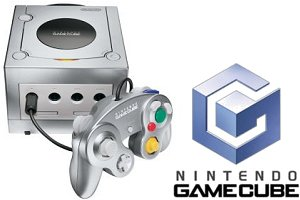

Ninetendo GameCube
The Nintendo GameCube, released in September 2001, was Nintendo's sixth-generation home video game console. Notable for its compact, cube-shaped design and handle for portability, the GameCube supported 480p progressive scan output for enhanced graphics. It utilized miniDVDs for games, which allowed for a unique form factor but limited storage compared to competitors.
The console featured a custom IBM PowerPC processor and 40 MB of RAM, enabling smooth gameplay and impressive graphics for its time. Key titles included popular franchises like "Super Mario," "The Legend of Zelda," and "Metroid," with standout games such as "Super Smash Bros. Melee" and "The Legend of Zelda: The Wind Waker."
The GameCube introduced four controller ports, encouraging multiplayer gaming, and it was compatible with the Game Boy Advance for certain features. While it didn't achieve the same commercial success as its competitors, the GameCube is fondly remembered for its innovative games and unique design, contributing significantly to Nintendo's legacy.